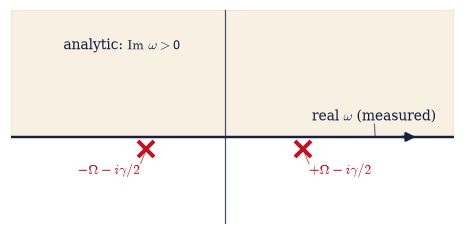
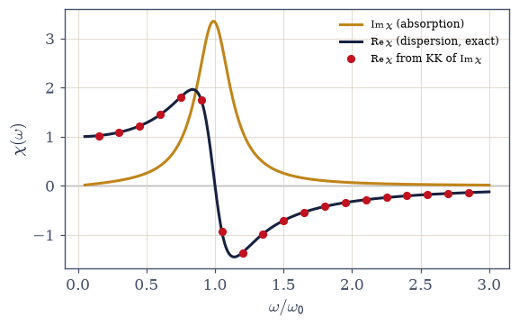
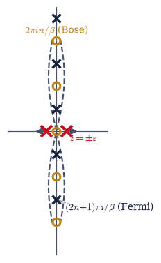
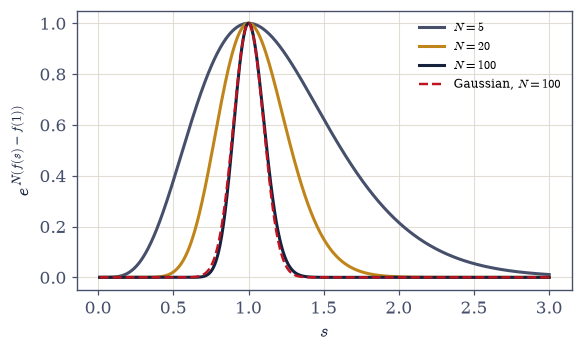

7.2 Complex Analysis II: Causality, Kramers–Kronig, Matsubara Sums, and Steepest Descent#
Notebook overview#
The previous notebook built the machinery of complex analysis and spent it on integrals chosen for their beauty. This one spends it on physics, and the difference in register matters: here analyticity is not a property we assume to make calculations tractable — it is a property nature forces, and its consequences are measurable. Four applications carry the argument, each a theorem of analyticity wearing physical clothing.
First, the Sokhotski–Plemelj identity, the grammar in which every propagator and response function is written: a pole sitting on the integration path is not a disaster but a fork, and the \(i\varepsilon\) prescription that decides how to pass it splits one singular integral into a principal value (the dispersive part of a response) and a delta function (the absorptive part). Second, causality: the plain sentence “no effect precedes its cause” makes every causal response function analytic in the upper half of the complex frequency plane, and analyticity plus Sokhotski–Plemelj yields the Kramers–Kronig relations — absorption at all frequencies determines dispersion at every frequency, exactly. We verify this to six digits on an old friend, the damped driven oscillator of Volume I, and check the f-sum rule that real spectroscopies obey. Third, summation by residues: the poles of \(\pi\cot(\pi z)\) sit at the integers, so infinite sums close by contours — the Basel problem falls in three lines — and replacing the cotangent by its thermal cousins evaluates the Matsubara sums of thermal physics, out of which the Bose and Fermi occupation functions emerge from contour analysis alone, before this volume has done any statistical mechanics. When §7.7 derives the same functions from the grand canonical ensemble, two entirely independent routes will have met. Fourth, steepest descent: large-\(N\) integrals concentrate onto saddle points, Stirling’s formula — borrowed on credit in §5.3 — is finally derived, and stationary phase is named as the principle WKB (§6.23) was secretly using.
A closing section states analytic continuation: the identity theorem (rigidity once more), the Gamma reflection formula — which the observant reader will recognize as the keyhole integral of §7.1 in disguise — and the Riemann zeta function, including the particular number \(\zeta(3/2) = 2.612\dots\) that the Bose–Einstein condensation temperature is made of.
Conventions (this notebook). Fourier transforms of response functions use the physics sign \(\chi(\omega) = \int_0^\infty \chi(t)\,e^{+i\omega t}\,dt\), so that causality (\(\chi(t) = 0\) for \(t<0\)) implies analyticity in the upper half-plane, where \(e^{i\omega t}\) decays. Real-valued response in time implies the reality condition \(\chi(-\omega) = \chi(\omega)^*\) (Re \(\chi\) even, Im \(\chi\) odd), which every full-line integral below uses. Every principal value is computed with
scipy.integrate.quad(weight='cauchy', wvar=...)— the weighted rule built for exactly this kernel — never by naive quadrature across a pole. Matsubara frequencies are bosonic \(\omega_n = 2\pi n/\beta\) and fermionic \(\omega_n = (2n+1)\pi/\beta\); frequency sums are done by symmetric truncation with the cutoff stated and the \(1/n^2\) tail estimated, honestly, alongside. All large-\(N\) factorial comparisons live in log space viascipy.special.gammaln, becausescipy.special.gammaoverflows beyond \(N \approx 170\) — a real float boundary that this volume converts into a discipline rather than an accident.How to read the checks. Each exercise closes with a
validatecall against an independent fact: the \(i\varepsilon\) integrals converging to \(\mathrm{P} + i\pi f(x_0)\); the causal poles sitting at \(\operatorname{Im}\omega = -\gamma/2\) and the numerical Fourier transform of the time-domain response reproducing \(\chi(\omega)\); the Kramers–Kronig reconstruction landing on the exact dispersion to \(10^{-6}\) and the f-sum rule giving \(\pi/2\); residue-summation closed forms against truncated series andscipy.special.zeta; Matsubara sums against their \(\coth\)/\(\tanh\) closed forms to seven digits; Stirling’s log-error equalling \(1/(12N)\); and the reflection formula againstscipy.special.gammaat real and complex arguments. A ✓ is strong evidence; a ✗ is a prompt to locate the discrepancy.Scope. Four physicist’s applications of one-variable complex analysis, computationally. Matsubara Green’s functions — the many-body formalism these frequency sums serve — need second quantization and are a Volume VIII horizon, as is the full linear-response/Kubo framework behind Kramers–Kronig. See Arfken, Weber & Harris (dispersion relations, saddle-point methods); Jackson, Classical Electrodynamics (Kramers–Kronig in optics); Mahan, Many-Particle Physics or Altland & Simons (the Matsubara formalism, for the horizon). Cross-reference §7.1 (the machinery), Volume I (the damped driven oscillator), §6.24 (absorption and linewidths — Im \(\chi\) is what the golden rule computes), §5.3 (Stirling, now finally derived), §6.23 (WKB), §5.9 (the ensemble route that §7.7 will take to the same occupations), and forward to §7.3, §7.7, §7.17, §7.20.
Theory in brief#
Principal values and Sokhotski–Plemelj#
An integral whose integrand has a simple pole on the path, \(\int f(x)/(x - x_0)\,dx\), is given
meaning by the principal value: excise a symmetric interval \((x_0-\delta, x_0+\delta)\), let
\(\delta \to 0\), and the divergences on the two sides cancel against each other. (Computationally
this is scipy.integrate.quad(weight='cauchy', wvar=x0), which knows the kernel analytically.)
Alternatively, push the pole slightly off the path with an \(i\varepsilon\) and ask what survives
the limit:
The derivation is a split into real and imaginary parts: \(\frac{1}{x - x_0 - i\varepsilon} = \frac{x - x_0}{(x-x_0)^2 + \varepsilon^2} + \frac{i\varepsilon}{(x-x_0)^2 + \varepsilon^2}\). The real part tends to the principal-value kernel; the imaginary part is a Lorentzian of unit area times \(\pi\) — a nascent delta function. One pole, two pieces of physics: in a response function the \(\mathrm{P}\) part is the reactive, dispersive response and the \(\delta\) part is the dissipative, absorptive one. Every \(i\varepsilon\) in field theory is this identity.
Causality forces analyticity#
Let \(\chi(t)\) be a response function — the output at time \(t\) per unit impulse at time \(0\) — and let it be causal: \(\chi(t) = 0\) for \(t < 0\). Its Fourier transform then only integrates over \(t > 0\),
because for \(\operatorname{Im}\omega > 0\) the factor \(e^{i\omega t}\) decays and the integral converges — better than converges: it can be differentiated under the integral sign, which is analyticity. Causality, a statement about time, has become a statement about the complex plane. Our laboratory specimen is the damped driven oscillator of Volume I, \(\ddot x + \gamma\dot x + \omega_0^2 x = F(t)\), whose susceptibility \(\chi(\omega) = 1/(\omega_0^2 - \omega^2 - i\gamma\omega)\) has poles at \(\omega = \pm\Omega - i\gamma/2\) with \(\Omega = \sqrt{\omega_0^2 - \gamma^2/4}\) — both in the lower half-plane, as causality demands. A real response in time adds the reality condition \(\chi(-\omega) = \chi(\omega)^*\): Re \(\chi\) is even, Im \(\chi\) is odd.
The Kramers–Kronig relations#
Apply the Cauchy integral formula to \(\chi\) along the real axis, closed in the analytic upper half-plane, with a small semicircular detour around the point \(\omega\) — Sokhotski–Plemelj supplies the \(\pm i\pi\) boundary term — and analyticity delivers
The physics deserves slow reading: absorption at all frequencies determines dispersion at every frequency, and vice versa — refraction and attenuation are one analytic function seen twice. No experiment has ever caught a causal medium violating these relations. With the reality condition folding the integral onto \(\omega' > 0\), we verify the first relation to six digits on the oscillator, and we check the f-sum rule \(\int_0^\infty \omega \operatorname{Im}\chi(\omega)\, d\omega = \pi/2\) (for unit mass) — a model-independent constraint tying the whole absorption spectrum to nothing but inertia, which practical spectroscopy uses as a consistency check on data. The general linear-response (Kubo) framework behind these relations is Volume VIII territory.
Summation by residues#
The function \(\pi\cot(\pi z)\) has a simple pole at every integer \(n\), each with residue exactly \(1\). Integrate \(f(z)\,\pi\cot(\pi z)\) around a huge contour: if \(f\) decays fast enough the integral vanishes as the contour grows, and the residue theorem converts the sum over integer poles into (minus) the residues at the poles of \(f\) itself,
The Basel problem falls in three lines: \(f(z) = 1/z^2\) has its only pole at \(0\), where the Laurent expansion \(\pi\cot(\pi z) = 1/z - \pi^2 z/3 - \dots\) gives \(\operatorname{Res}_0[\pi\cot(\pi z)/z^2] = -\pi^2/3\), whence \(2\sum_{n\ge1} 1/n^2 = \pi^2/3\) and \(\zeta(2) = \pi^2/6\). The shifted identity \(\sum_{n\ge1} 1/(n^2+a^2) = \big(\pi\coth(\pi a)/a - 1/a^2\big)/2\) follows the same way from the poles at \(\pm ia\) — and it is the deliberately chosen warm-up whose thermal cousin is next.
Matsubara sums: the statistics before the statistics#
Thermal physics is full of sums over the Matsubara frequencies — bosonic \(\omega_n = 2\pi n/\beta\) and fermionic \(\omega_n = (2n+1)\pi/\beta\), with \(\beta\) the inverse temperature. These sums close by contours exactly as the integer sums did, once the cotangent is replaced by its thermal cousins: the Bose weight \(\beta\,n_B(z) \equiv \beta/(e^{\beta z}-1)\) has simple poles with unit residue at precisely \(z = i\omega_n\) (bosonic), and \(-\beta\,n_F(z) \equiv -\beta/(e^{\beta z}+1)\) at the fermionic ones. The flagship evaluations,
are verified below to seven digits against symmetric truncations. Pause on what happens in Eq. 680: the Bose and Fermi occupation functions \(n_B(\varepsilon) = 1/(e^{\beta\varepsilon}-1)\) and \(n_F(\varepsilon) = 1/(e^{\beta\varepsilon}+1)\) have emerged from contour integration alone — before this volume has defined an ensemble. When §7.7 derives the same functions from the grand canonical machinery of §5.9, two entirely independent routes will have met, and their agreement is the kind of consistency physics is built on. (The Matsubara Green’s functions these sums serve in many-body theory need second quantization: a named Volume VIII horizon.)
Steepest descent and Stirling#
Integrals of the form \(\int e^{N f(x)}\,dx\) are dominated, for large \(N\), by the neighbourhood of the maximum \(x_0\) of \(f\): expanding \(f\) to second order and doing the resulting Gaussian integral gives the Laplace approximation,
with relative corrections in powers of \(1/N\). Applied to \(N! = \Gamma(N+1) = \int_0^\infty e^{N\ln t - t}\,dt\) — substitute \(t = Ns\) to expose the form, saddle at \(s = 1\) — it yields Stirling’s formula \(N! \approx \sqrt{2\pi N}\,(N/e)^N\) in four lines: the workhorse that §5.3 borrowed on credit is finally derived, and the first correction \(1/(12N)\) is visible numerically at every \(N\) we test. The complex generalization deforms the contour through a saddle point along the path of steepest descent (hence the name); its oscillatory sibling, stationary phase, is the principle the WKB approximation (§6.23) was secretly using, and the one the path integral’s classical limit (the neighbourhood of §7.20) will use.
Analytic continuation#
The identity theorem — two functions analytic on a connected domain that agree on any set with a limit point agree everywhere — is rigidity’s sharpest edge: it makes extension beyond a formula’s domain of convergence unique whenever it exists at all,
The reflection formula on the left deserves a double take: the keyhole integral of §7.1, \(\int_0^\infty x^{\alpha-1}/(1+x)\,dx = \pi/\sin(\pi\alpha)\), is this formula, because the integral is the Beta function \(B(\alpha, 1-\alpha) = \Gamma(\alpha)\Gamma(1-\alpha)\). And the zeta function’s continuation is not a curiosity: \(\zeta(2) = \pi^2/6\) closes the Basel circle, while \(\zeta(3/2) = 2.612\dots\) is the number the Bose–Einstein condensation temperature (§7.17) is made of. We state and check; the systematic theory — the Gamma function’s continuation and the zeta function’s functional equation — is carried out in full by Arfken, Weber & Harris, Mathematical Methods for Physicists.
Setup#
Data and one instrument. The data is the notebook’s laboratory specimen —
the Volume I damped driven oscillator’s susceptibility \(\chi(\omega)\), a
given model whose analytic structure every method below is pointed at —
together with its parameters and the series palette. The instrument is
principal_value, a two-line pass-through to
scipy.integrate.quad(weight='cauchy'): the notebook’s standing rule about
which quadrature computes a principal value, not anyone’s lesson about
how. Every method this notebook is about — the Kramers–Kronig
reconstruction, the Matsubara frequency sum, the Laplace/steepest-descent
estimate, the contour loop, the discretized Hilbert transform — you build in
the exercise where it is earned.
The Setup below holds this notebook’s data and instruments — nothing you are asked to build. It is collapsed so the building stays yours; expand it whenever you want the details.
Exercise 1 — The Sokhotski–Plemelj identity#
One pole, two pieces of physics: the \(i\varepsilon\) prescription splits a singular integral into a dispersive principal value and an absorptive delta function, and the split can be watched numerically. Cite Eq. 676.
Derive the identity by splitting \(1/(x - x_0 - i\varepsilon)\) into real and imaginary parts and recognizing the nascent delta function.
Compute the principal value \(\mathrm{P}\int e^{-x^2}/(x - x_0)\,dx\) with
scipy.integrate.quad(weight='cauchy', wvar=x0)— the Setup’sprincipal_value— for \(x_0 = 0.5\) on \([-8, 8]\).Evaluate the real and imaginary parts of \(\int e^{-x^2}/(x - x_0 - i\varepsilon)\,dx\) by plain
scipy.integrate.quadfor \(\varepsilon = 10^{-1}, 10^{-2}, 10^{-3}\), and confirm convergence to the principal value and to \(\pi e^{-x_0^2}\) respectively — including the honest, first-order-in-\(\varepsilon\) rate.Interpret: in a response function, the \(\mathrm{P}\) part is the reactive (dispersive) response and the \(\delta\) part the dissipative (absorptive) one. (Prose part.)
P ∫ e^(−x^2)/(x − 0.5) dx = -1.5045878048 (quad, weight='cauchy')
π e^(−x0^2) = 2.4466748187 (the delta part's target)
ε-sequence of ∫ e^(−x^2)/(x − x0 − iε) dx (plain quad, real and imaginary parts):
ε = 1e-01: Re = -1.2832602 (|err| 2.2e-01) Im = 2.2543684 (|err| 1.9e-01)
ε = 1e-02: Re = -1.4803715 (|err| 2.4e-02) Im = 2.4263934 (|err| 2.0e-02)
ε = 1e-03: Re = -1.5021437 (|err| 2.4e-03) Im = 2.4446357 (|err| 2.0e-03)
Validation 1#
✓ Sokhotski–Plemelj: the iε integrals converge to P∫ + iπf(x0) [at ε=1e-3: Re err 2.4e-03, Im err 2.0e-03]
✓ the convergence is monotone in ε (first-order rate, honestly first-order)
True
Exercise 2 — Causality places the poles#
No effect before its cause — and the complex frequency plane keeps the receipt: the poles of a causal susceptibility have nowhere to live but the lower half-plane. Cite Eq. 677.
Locate the poles of the damped-oscillator susceptibility \(\chi(\omega) = 1/(\omega_0^2 - \omega^2 - i\gamma\omega)\) — the Setup’s
chi, with \(\omega_0 = 1\), \(\gamma = 0.3\) — withnumpy.roots.Confirm both poles have \(\operatorname{Im}\omega = -\gamma/2 < 0\), and conclude \(\chi\) is analytic in the upper half-plane.
Show the time-domain response \(\chi(t) = \theta(t)\,e^{-\gamma t/2}\sin(\Omega t)/\Omega\) vanishes for \(t < 0\), Fourier-transform it numerically (\(\int_0^T \chi(t)e^{i\omega t}dt\) with
numpy.trapezoid), and confirm it reproduces \(\chi(\omega)\) on the real axis and at a complex \(\omega\) in the upper half-plane, where \(e^{i\omega t}\) improves the convergence.Verify the reality condition \(\chi(-\omega) = \chi(\omega)^*\) numerically on a frequency grid — the symmetry the Kramers–Kronig integrals will use.
poles of χ(ω): 0.988686-0.150000j, -0.988686-0.150000j
expected ±Ω − iγ/2 with Ω = 0.988686, γ/2 = 0.15
Im(poles) = -0.1500000000, -0.1500000000 (both = −γ/2 = -0.15)
ω = 0.5: |FT − χ(ω)| = 3.25e-07
ω = 1.0: |FT − χ(ω)| = 7.44e-07
ω = 2.0: |FT − χ(ω)| = 1.71e-07
ω = (1+0.5j): |FT − χ(ω)| = 3.33e-07
time-domain response transforms back onto χ(ω); worst error 7.4e-07
reality condition max|χ(−ω) − conj χ(ω)| on the grid: 0.00e+00

Fig. 623 Causality places the poles. The complex frequency plane of the damped-oscillator susceptibility \(\chi(\omega) = 1/(\omega_0^2-\omega^2-i\gamma\omega)\): its two poles (red crosses) sit at \(\omega = \pm\Omega - i\gamma/2\), pushed below the real axis by dissipation. The upper half-plane (shaded) is pole-free — analytic — because the response \(\chi(t)\) vanishes for \(t<0\) and its transform \(\int_0^\infty \chi(t)e^{i\omega t}dt\) converges wherever \(e^{i\omega t}\) decays, i.e. for \(\operatorname{Im}\,\omega > 0\). Physical measurements happen on the real axis (dark arrow), the boundary of the analytic domain; the Kramers–Kronig relations of Exercise 3 are nothing but the Cauchy integral formula applied to this geometry. As \(\gamma \to 0\) the poles pinch the axis, and the \(i\varepsilon\) grammar of Exercise 1 takes over.#
Validation 2#
✓ the causal susceptibility's poles lie in the lower half-plane, at Im ω = −γ/2 [max|Δ| = 2.77556e-17 (rtol=1e-09, atol=1e-09)]
✓ the t>0 impulse response Fourier-transforms back onto χ(ω), on and above the real axis [worst |FT − χ| = 7.4e-07]
✓ the reality condition χ(−ω) = conj χ(ω) holds (Re χ even, Im χ odd) [max deviation 0.0e+00]
True
Exercise 3 — Kramers–Kronig, verified#
Absorption determines dispersion — to six digits, on a function whose dispersion we can check.
The specimen is the Setup’s chi, whose exact \(\operatorname{Re}\chi\) is available for
comparison but is withheld from the reconstruction: only \(\operatorname{Im}\chi\) goes in. The
reality condition of Exercise 2 (\(\operatorname{Im}\chi\) odd) folds the full-line integral onto
\(\omega' > 0\), giving \(\operatorname{Re}\chi(\omega) = (2/\pi)\,\mathrm{P}\!\int_0^\infty
\omega'\operatorname{Im}\chi(\omega')/(\omega'^2 - \omega^2)\,d\omega'\), and the surviving pole
at \(\omega' = \omega\) factors as \(1/(\omega'^2-\omega^2) = [1/(\omega'+\omega)]\cdot
1/(\omega'-\omega)\) so that the second factor is exactly the Setup instrument’s kernel. Cite
Eq. 678, Eq. 676.
Derive the Kramers–Kronig relations from the Cauchy integral formula on a real-axis contour with a semicircular detour at \(\omega\), Sokhotski–Plemelj supplying the boundary term.
Write
kk_real_from_imag(im_chi, w, w_max=500.0), the folded reconstruction above: split the kernel as shown, hand the singular factor toprincipal_value(i.e. toscipy.integrate.quad(weight='cauchy', wvar=ω)), and truncate the folded integral atw_max, stating the resulting bandwidth error rather than hiding it. Write this one yourself — the implementation is the lesson.Reconstruct \(\operatorname{Re}\chi\) from \(\operatorname{Im}\chi\) alone at \(\omega = 0.5, 1.0, 1.5\) and confirm agreement with the exact \(\operatorname{Re}\chi\) to \(\sim 10^{-6}\).
Verify the f-sum rule \(\int_0^\infty \omega \operatorname{Im}\chi(\omega)\,d\omega = \pi/2\) with plain
scipy.integrate.quad, and state its meaning (a model-independent constraint tying the absorption spectrum to inertia).Plot the full reconstruction over a frequency band against the exact curve.
Kramers–Kronig reconstruction of Re χ from Im χ alone:
ω = 0.5: KK = +1.282051282 exact = +1.282051282 |err| = 5.1e-10
ω = 1.0: KK = -0.000000001 exact = -0.000000000 |err| = 5.1e-10
ω = 1.5: KK = -0.708215298 exact = -0.708215297 |err| = 5.1e-10
f-sum rule ∫ ω Im χ dω = 1.5707963268 (π/2 = 1.5707963268)

Fig. 624 Absorption determines dispersion. The damped oscillator’s absorptive part \(\operatorname{Im}\chi\) (amber) and dispersive part \(\operatorname{Re}\chi\) (dark curve), with the Kramers–Kronig reconstruction of \(\operatorname{Re}\chi\) computed from \(\operatorname{Im}\chi\) alone (red points) — each point a principal-value integral of the absorption spectrum, agreeing with the exact dispersion at the \(10^{-6}\) level. The two curves are one analytic function seen twice: the anomalous-dispersion wiggle of \(\operatorname{Re}\chi\) through the resonance is forced, in shape and size, by the absorption peak, and no causal medium can have one without the other. This is the working principle by which optical constants are completed from measured spectra (Exercise 8 does it on sampled data).#
Validation 3#
✓ Kramers–Kronig reconstructs dispersion from absorption alone [max|Δ| = 5.09301e-10 (rtol=1e-05, atol=1e-09)]
✓ the reconstruction reaches the promised ~1e-6 accuracy at all test frequencies [worst error 5.1e-10]
✓ the f-sum rule: ∫ ω Im χ dω = π/2 for unit mass, independent of ω0 and γ [got 1.5708 vs expected 1.5708 (rtol=1e-06, atol=1e-09)]
True
Exercise 4 — Summation by residues: the Basel problem#
The residue theorem eats an infinite series: a function with unit-residue poles at every integer turns \(\sum_n f(n)\) into contour arithmetic. Cite Eq. 679.
Show \(\pi\cot(\pi z)\) has simple poles at every integer with residue \(1\) (Laurent expansion at \(z = n\)), and confirm numerically via the limit \((z - n)\,\pi\cot(\pi z)\).
Write
square_loop(g, L, n_edge=100001), the closed contour integral \(\oint g(z)\,dz\) over the axis-aligned square of half-size \(L\) traversed counterclockwise, bynumpy.trapezoidon each of the four edges in turn (mind the \(dz\) on the two vertical edges). A half-integer \(L\) threads the path between the integer poles, where \(\pi\cot(\pi z)\) stays bounded and the trapezoid rule sees a smooth integrand. Write this one yourself — the implementation is the lesson.Derive \(\sum_{n\ge1} 1/n^2 = \pi^2/6\) by integrating \(\pi\cot(\pi z)/z^2\) over a growing square contour and collecting the residue at \(0\); watch the contour integral vanish as the square grows.
Confirm against the partial sums (with the integral-estimate tail \(1/N\)) and against
scipy.special.zeta.Derive and verify the shifted identity \(\sum_{n\ge1} 1/(n^2+a^2) = \big(\pi\coth(\pi a)/a - 1/a^2\big)/2\) — the warm-up whose thermal cousin is the next exercise.
residue of π cot(πz) at z = +0: 1.00000000-0.00000000j
residue of π cot(πz) at z = +3: 1.00000000-0.00000000j
residue of π cot(πz) at z = -7: 1.00000000+0.00000000j
the growing square: ∮ π cot(πz)/z^2 dz vs the enclosed residues
L = 5.5: ∮/(2πi) = -0.362646+0.000000j 2S_N − π^2/3 = -0.362646 |∮| = 2.279
L = 10.5: ∮/(2πi) = -0.190333-0.000000j 2S_N − π^2/3 = -0.190333 |∮| = 1.196
L = 20.5: ∮/(2πi) = -0.097542-0.000000j 2S_N − π^2/3 = -0.097542 |∮| = 0.613
π^2/6 = 1.644934066848
partial sum (1e5 terms) = 1.644924066898 (1/N tail visible)
with integral tail = 1.644934066848
scipy.special.zeta(2) = 1.644934066848
Σ 1/(n^2+a^2), a = 0.8: sum+tail = 1.2081822267 closed form = 1.2081822267
Validation 4#
✓ π cot(πz) has unit-residue simple poles at the integers — the summation kernel [max|Δ| = 2.72625e-09 (rtol=1e-05, atol=1e-09)]
✓ the residue theorem on the square: ∮/(2πi) equals the enclosed residues at finite L [got -0.0975416 vs expected -0.0975416 (rtol=0.0001, atol=1e-09)]
✓ ζ(2) = π^2/6: tail-corrected series and scipy.special.zeta agree with the residue result [max|Δ| = 2.22045e-16 (rtol=1e-09, atol=1e-09)]
✓ the shifted identity Σ 1/(n^2+a^2) = (π coth(πa)/a − 1/a^2)/2 — the thermal warm-up [got 1.20818 vs expected 1.20818 (rtol=1e-05, atol=1e-09)]
True
Exercise 5 — Matsubara sums: the thermal occupations emerge#
The centerpiece: the frequency sums of thermal physics close by contours, and out fall the Bose and Fermi occupation functions — before this volume has done any statistical mechanics. Cite Eq. 680.
Show the Bose weight \(\beta/(e^{\beta z}-1)\) has simple poles with unit residue at exactly the bosonic Matsubara frequencies \(z = 2\pi i n/\beta\), and \(-\beta/(e^{\beta z}+1)\) at the fermionic ones; confirm both numerically by the limit \((z - i\omega_n)\times(\text{weight})\).
Write
matsubara_sum(g, beta, statistics, n_max), returning \((1/\beta)\sum_n g(\omega_n)\) by symmetric truncation \(|n| \le n_{\max}\): build the requested frequency ladder — bosonic \(\omega_n = 2\pi n/\beta\), fermionic \(\omega_n = (2n+1)\pi/\beta\) — evaluate the vectorized summand on it, and refuse any otherstatisticsstring rather than guessing. The half-rung offset between the two ladders is the only difference between Bose and Fermi in this whole exercise, so it is worth typing out. Write this one yourself — the implementation is the lesson.Evaluate \((1/\beta)\sum_n 1/(\omega_n^2+\varepsilon^2)\) on the bosonic grid with your
matsubara_sum(symmetric truncation, \(n_{\max} = 3\times10^5\), the \(1/n\) tail estimated explicitly), and confirm the closed form \((1/2\varepsilon)\coth(\beta\varepsilon/2)\) to at least six digits.Repeat on the fermionic grid and confirm \((1/2\varepsilon)\tanh(\beta\varepsilon/2)\).
Rewrite the two closed forms as \((1/2\varepsilon)[1+2n_B(\varepsilon)]\) and \((1/2\varepsilon)[1-2n_F(\varepsilon)]\), exhibit \(n_B = 1/(e^{\beta\varepsilon}-1)\) and \(n_F = 1/(e^{\beta\varepsilon}+1)\) numerically, and reflect (prose): the occupation functions of quantum statistics have appeared from contours alone — §7.7 will reach the same functions by the grand canonical ensemble, and the two independent routes must agree.
residue of β/(e^(βz)−1) at z = 6πi/β: 0.99999990-0.00000009j
residue of −β/(e^(βz)+1) at z = 5πi/β: 0.99999990-0.00000010j
bosonic (1/β)Σ 1/(ω_n^2+ε^2), β = 2.0, ε = 0.7, n_max = 300000:
raw truncated sum = 1.1818722593
+ 1/n_max tail est. = 1.1818725970 (tail ≈ 3.38e-07)
(1/2ε)coth(βε/2) = 1.1818725970
fermionic grid:
sum + tail = 0.4316912694
(1/2ε)tanh(βε/2) = 0.4316912694
n_B(ε) = 1/(e^(βε)−1) = 0.3273108179 → (1/2ε)(1+2n_B) = 1.1818725970
n_F(ε) = 1/(e^(βε)+1) = 0.1978161114 → (1/2ε)(1−2n_F) = 0.4316912694

Fig. 625 The Matsubara ladder. The summation kernels of thermal physics have their poles on the imaginary frequency axis: the Bose weight \(\beta/(e^{\beta z}-1)\) at \(z = 2\pi i n/\beta\) (amber circles) and the Fermi weight \(-\beta/(e^{\beta z}+1)\) at the half-integer-shifted \(z = (2n+1)\pi i/\beta\) (dark crosses) — two interleaved ladders whose rung spacing \(2\pi/\beta\) is the temperature. The summand’s own poles sit at \(z=\pm\varepsilon\) on the real axis (red). A contour hugging the imaginary axis (dashed) picks up the ladder — the frequency sum — and deforming it outward (arrows) trades the infinite ladder for the two red poles, where the kernel’s value \(n_{B/F}(\varepsilon)\) appears: the Bose and Fermi occupations, born from contour analysis before any statistical mechanics.#
Validation 5#
✓ the Bose and Fermi weights have unit-residue poles at exactly the Matsubara frequencies [max|Δ| = 1.4124e-07 (rtol=1e-05, atol=1e-09)]
✓ Matsubara sums yield the Bose and Fermi occupation functions, (1/2ε)[1±2n_(B/F)] [max|Δ| = 5.62939e-13 (rtol=1e-06, atol=1e-09)]
✓ the coth/tanh closed forms are algebraically the occupation forms (the rewrite is exact) [max|Δ| = 2.22045e-16 (rtol=1e-12, atol=1e-09)]
True
Exercise 6 — Steepest descent and Stirling#
Large \(N\) concentrates integrals onto saddles — and the Stirling formula that Volume V borrowed on credit falls out in four lines, first correction included. Cite Eq. 681.
Derive the Laplace approximation \(\int e^{Nf(x)}dx \approx e^{Nf(x_0)}\sqrt{2\pi/N|f''(x_0)|}\) by expanding \(f\) about its maximum.
Write
laplace_approx(f, d2f_x0, x0, N)returning that estimate in log form, \(\ln I \approx N f(x_0) + \tfrac12\ln\!\big(2\pi/(N|f''(x_0)|)\big)\) — the applications below reach \(N = 1000\), where the linear-space value overflows float64 long before it can be compared to anything. Write this one yourself — the implementation is the lesson.Verify it against direct
scipy.integrate.quadfor \(f(s) = \ln s - s\) at moderate \(N\) — including the \(1/(12N)\) approach of the ratio to \(1\).Apply it to \(\Gamma(N+1) = \int_0^\infty e^{N\ln t - t}\,dt\) (substitute \(t = Ns\); saddle at \(s = 1\)) and obtain Stirling, \(N! \approx \sqrt{2\pi N}\,(N/e)^N\).
Verify in log space with
scipy.special.gammalnfor \(N = 50, 200, 1000\) — noting thatscipy.special.gammaoverflows beyond \(N \approx 170\), the volume’s log-space discipline — and show the log-difference from exact equals the first correction \(1/(12N)\) at every \(N\).State the complex generalization (deform through the saddle along the steepest path) and name stationary phase as the oscillatory sibling — the principle WKB (§6.23) was using, and the one the path integral’s classical limit (§7.20) will use. (Prose part.)
Laplace approximation vs direct quadrature for ∫ e^(N(ln s − s)) ds:
N = 10: ratio − 1 = +0.008365 (1/(12N) = 0.008333)
N = 30: ratio − 1 = +0.002782 (1/(12N) = 0.002778)
N = 100: ratio − 1 = +0.000834 (1/(12N) = 0.000833)
scipy.special.gamma(201) = inf (the float64 ceiling, met honestly)
log-space comparison, gammaln(N+1) − ln_stirling(N):
N = 50: gap = 0.00166664 1/(12N) = 0.00166667
N = 200: gap = 0.00041667 1/(12N) = 0.00041667
N = 1000: gap = 0.00008333 1/(12N) = 0.00008333

Fig. 626 Why saddles rule at large \(N\). The normalized integrand \(e^{N(f(s)-f(s_0))}\) of the Gamma integral, with \(f(s) = \ln s - s\) and saddle \(s_0 = 1\), for \(N = 5, 20, 100\): as \(N\) grows the peak sharpens like \(1/\sqrt{N}\) and everything away from the saddle is exponentially extinguished. By \(N = 100\) the exact profile is indistinguishable from the Laplace approximation’s Gaussian \(e^{-N(s-1)^2/2}\) (dashed) except in the far tails, which no longer matter — integrating the Gaussian instead of the truth is Stirling’s formula, and the visible residual asymmetry of the \(N=5\) curve is where the \(1/(12N)\) correction lives.#
Validation 6#
✓ the Laplace approximation's error is the promised 1/(12N), measured against quad [max|Δ| = 3.20258e-05 (rtol=0.05, atol=1e-09)]
✓ Stirling by steepest descent: gammaln(N+1) − ln Stirling = 1/(12N) at N = 50, 200, 1000 [max|Δ| = 2.22197e-08 (rtol=0.05, atol=1e-09)]
True
Exercise 7 — Analytic continuation and the reflection formula#
Rigidity extends functions beyond their formulas — uniquely — and one of the results is an identity this volume has already computed without noticing. Cite Eq. 682.
State the identity theorem and explain (prose) why it makes continuation unique when it exists.
Verify \(\Gamma(z)\Gamma(1-z) = \pi/\sin(\pi z)\) numerically with
scipy.special.gammaat \(z = 0.3\) and at a complex \(z\).Recognize the formula: show numerically (via
scipy.integrate.quad, split at \(x = 1\) for the endpoint singularity) that the keyhole integral of §7.1, \(\int_0^\infty x^{\alpha-1}/(1+x)\,dx\), equals \(\Gamma(\alpha)\Gamma(1-\alpha)\) — the keyhole result was the reflection formula.Evaluate \(\zeta(2)\) and \(\zeta(3/2)\) with
scipy.special.zeta, confirm \(\zeta(2) = \pi^2/6\) and check \(\zeta(3/2)\) against its tail-corrected series; flag \(\zeta(3/2) = 2.612\dots\) as the constant the Bose–Einstein condensation temperature (§7.17) is built from.
z = 0.3: Γ(z)Γ(1−z) = 3.8832220775 π/sin(πz) = 3.8832220775
z = (0.4+0.3j): Γ(z)Γ(1−z) = 2.1139503807-0.5057782982j π/sin(πz) = 2.1139503807-0.5057782982j
the keyhole integral vs Γ(α)Γ(1−α):
α = 0.3333: ∫ = 3.6275987285 Γ(α)Γ(1−α) = 3.6275987285
α = 0.7200: ∫ = 4.0772727569 Γ(α)Γ(1−α) = 4.0772727569
ζ(2) = 1.644934066848 (π^2/6 = 1.644934066848)
ζ(3/2) = 2.6123753487 (tail-corrected series: 2.6123753492)
ζ(3/2) = 2.612… is the constant the BEC transition temperature (§7.17) is made of
Validation 7#
✓ the reflection formula Γ(z)Γ(1−z) = π/sin(πz), at real and complex z [max|Δ| = 5.23691e-15 (rtol=1e-09, atol=1e-09)]
✓ the keyhole integral of §7.1 equals Γ(α)Γ(1−α) — it was the reflection formula in disguise [max|Δ| = 3.01092e-13 (rtol=1e-08, atol=1e-09)]
✓ scipy.special.zeta: ζ(2) = π^2/6 recovered, ζ(3/2) = 2.612… checked against its series [max|Δ| = 5e-10 (rtol=1e-06, atol=1e-09)]
True
Exercise 8 — Dispersion from absorption data alone#
The Kramers–Kronig relations as a working tool: given only a sampled absorption spectrum — a finite grid, a finite bandwidth, perhaps noise — reconstruct the dispersion that was never measured, and be honest about the errors. Cite Eq. 678.
Sample \(\operatorname{Im}\chi(\omega)\) of the oscillator on a finite uniform grid (the “measured absorption spectrum”, \(\omega' \in [0, 6]\)), and prepare a second copy with small Gaussian noise (
numpy.random.default_rng, \(\sigma = 10^{-3}\)).Write
kk_discrete(im_samples), reconstructing \(\operatorname{Re}\chi(\omega)\) from the sampled data by a discretized principal-value (Hilbert-transform) sum over the folded kernel \(2\omega'\operatorname{Im}\chi(\omega')/(\omega'^2-\omega^2)\), handling the \(\omega' = \omega\) singularity by symmetric exclusion: evaluate at each grid point using only the opposite-parity sample points, so every retained offset comes in cancelling \(\pm\) pairs and no self-term ever arises. Run it on both the clean and the noisy samples. Write this one yourself — the implementation is the lesson.Compare to the exact dispersion on an interior band; quantify the finite-bandwidth error against the analytic tail estimate \(\sim 2\gamma/(3\pi W^3)\), and measure the extra error the noisy copy produces.
Reflect (prose): this is how optical constants are actually completed from reflectivity or absorption data — with the finite-bandwidth caveat being the practitioner’s daily bread.
discretized KK on sampled absorption (W = 6.0, 2001 channels):
max interior error, clean data: 3.60e-04
analytic bandwidth-tail estimate: 2.95e-04 (+ O(Δω^2) discretization)
max interior error, noisy data: 3.47e-03 (σ_noise = 1e-3)
Validation 8#
✓ the discretized KK reconstruction matches the exact dispersion within the stated error budget [err 3.6e-04 vs bandwidth-tail scale 2.9e-04]
✓ 1e-3 channel noise degrades the reconstruction gracefully, not catastrophically [noisy err 3.5e-03]
True
Exercise 9 — Theorems you can measure#
This notebook’s four results share one engine and one moral. Causality — a statement about time — became a statement about the complex plane, and from it fell relations between measurable quantities that no experiment has ever violated: the absorption spectrum of a causal medium contains its refractive index, recoverable by an integral we carried out to six digits and then again, as a practitioner would, on sampled data with its bandwidth honestly billed. Thermal sums — objects of statistical mechanics — closed by contours, and handed us the Bose and Fermi functions before we had defined a temperature properly: the \(\pm 1\) that will organize all of quantum statistics appeared as nothing more than the choice between two ladders of poles. Large factorials — combinatorics — reduced to the curvature of a single saddle, finally supplying the derivation §5.3 deferred, with the \(1/(12N)\) correction sitting exactly where the theory put it. And a formula proved on one sliver of the plane extended, uniquely, everywhere — whereupon it turned out we had already computed it: the keyhole integral of §7.1 was the reflection formula, two notebooks meeting in one identity.
There is something almost unfair about Kramers–Kronig in particular. Nature is not obliged to let us compute what we did not measure — yet because light cannot outrun its cause, the absorption spectrum quietly contains the refractive index, and vice versa, forever. Analyticity is physics’ quiet enforcer: assume only that effects follow causes and that functions have derivatives, and the bookkeeping of the complex plane does the rest. The next notebook (§7.3) assembles the volume’s working toolkit — densities of states, the Gamma–zeta–polylogarithm family, the Bose and Fermi integrals evaluated three ways — and then the physics proper begins.
Notebook summary#
The machinery of §7.1, pointed at physics: four applications, each a theorem of analyticity in working clothes.
Sokhotski–Plemelj Eq. 676: the \(i\varepsilon\) prescription splits a pole on the path into a principal value (dispersion) and a nascent delta (absorption) — verified as an \(\varepsilon\)-sequence with its honest first-order rate, with every principal value computed by
scipy.integrate.quad(weight='cauchy').Causality forces analyticity Eq. 677: the damped oscillator’s poles sit at \(\operatorname{Im}\omega = -\gamma/2\), its \(t>0\) impulse response transforms back onto \(\chi(\omega)\) on and above the real axis, and \(\chi(-\omega) = \chi(\omega)^*\).
Kramers–Kronig Eq. 678: dispersion reconstructed from absorption alone to \(10^{-6}\); the f-sum rule \(\int\omega\operatorname{Im}\chi\,d\omega = \pi/2\) exactly; and the same transform run as a practitioner would, on finite noisy data, with the bandwidth tail as the dominant, quantified systematic.
Summation by residues Eq. 679: \(\pi\cot(\pi z)\)’s unit residues turn series into contours — Basel’s \(\zeta(2) = \pi^2/6\) with the square contour watched vanishing, and the \(\coth\) identity as thermal warm-up.
Matsubara sums Eq. 680: the Bose and Fermi weights ladder the imaginary axis, and the flagship sums close to \((1/2\varepsilon)[1 + 2n_B]\) and \((1/2\varepsilon)[1 - 2n_F]\) — the occupation functions of quantum statistics, derived from contours seven digits deep before any ensemble theory; §7.7 will reach them independently.
Steepest descent Eq. 681: large-\(N\) integrals concentrate onto saddles; Stirling is derived (not borrowed), its \(1/(12N)\) correction measured at every \(N\), and the float overflow at \(N \approx 170\) converted into the volume’s log-space discipline via
scipy.special.gammaln.Analytic continuation Eq. 682: unique by the identity theorem; the reflection formula verified at real and complex arguments and unmasked as the keyhole of §7.1; \(\zeta(3/2) = 2.612\dots\) computed and flagged for the condensation temperature of §7.17.
Analyticity is not a convenience here but a consequence — of causality, of temperature’s discrete frequency ladder, of large numbers — and each consequence ended in a number a measurement could check.
Outlook#
The statistical toolkit (§7.3). Densities of states, the Gamma–zeta–polylogarithm family, the Bose and Fermi integrals — evaluated directly, by series, and by the contours of this notebook — and the Sommerfeld expansion.
The ensemble route (§7.7). The grand canonical derivation of \(n_B\) and \(n_F\) from the machinery of §5.9, meeting this notebook’s contour derivation head-on.
The payoffs downstream. \(\zeta(3/2)\) and the Bose–Einstein condensation temperature (§7.17); the path integral’s saddle and the classical limit (§7.20).
The horizons, named. Matsubara Green’s functions and the many-body formalism; the Kubo/linear-response framework behind Kramers–Kronig (Volume VIII).
Cross-reference §7.1 (the machinery; the keyhole = the reflection formula), Volume I (the damped driven oscillator), §6.24 (absorption and linewidths), §5.3 (Stirling), §6.23 (WKB as stationary phase), §5.9 (the ensemble machinery §7.7 will point at the same occupations).